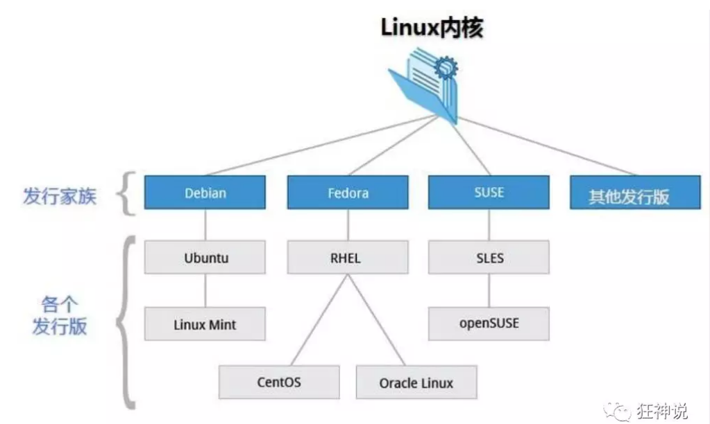
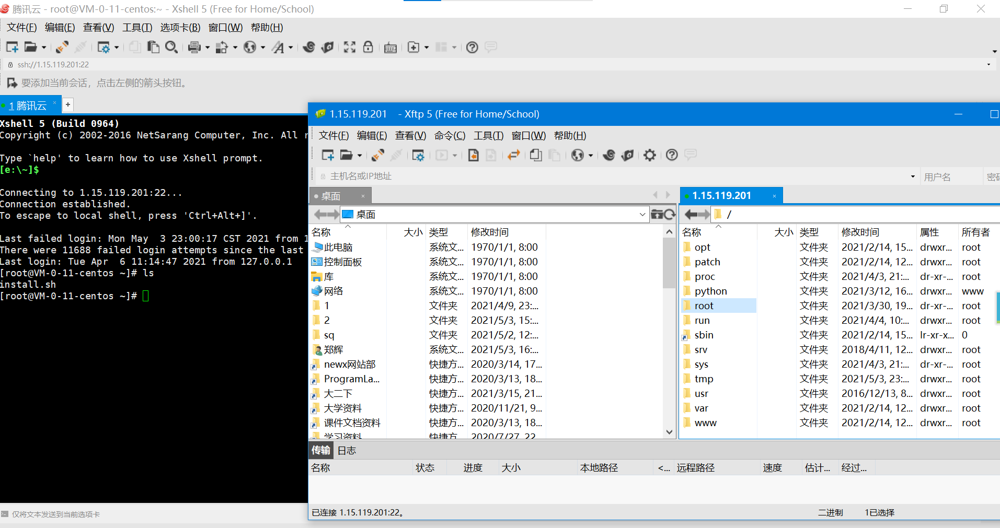

Linux（一）——初识
环境及介绍
学习基于CentOS 7
Linux 内核最初只是由芬兰人林纳斯·托瓦兹（Linus Torvalds）在赫尔辛基大学上学时出于个人爱好而编写的。
Linux 是一套免费使用和自由传播的类 Unix 操作系统，是一个基于 POSIX（可移植操作系统接口） 和 UNIX 的多用户、多任务、支持多线程和多 CPU 的操作系统。
Linux 能运行主要的 UNIX 工具软件、应用程序和网络协议。它支持 32 位和 64 位硬件。Linux 继承了 Unix 以网络为核心的设计思想，是一个性能稳定的多用户网络操作系统。

远程连接

用户登录
命令行登录
ssh登录
图形界面登录
最高权限账号为root，可以操作一切
关机
服务器几乎不关机
linux中无错误即代表操作成功
1 | sync # 将数据由内存同步到硬盘中。 |
系统目录结构
- /bin：bin是Binary的缩写, 这个目录存放着最经常使用的命令。
- /boot： 这里存放的是启动Linux时使用的一些核心文件，包括一些连接文件以及镜像文件。
- /dev ： dev是Device(设备)的缩写, 存放的是Linux的外部设备，在Linux中访问设备的方式和访问文件的方式是相同的。
- /etc： 这个目录用来存放所有的系统管理所需要的配置文件和子目录。
- /home：用户的主目录，在Linux中，每个用户都有一个自己的目录，一般该目录名是以用户的账号命名的。
- /lib：这个目录里存放着系统最基本的动态连接共享库，其作用类似于Windows里的DLL文件。
- /lost+found：这个目录一般情况下是空的，当系统非法关机后，这里就存放了一些文件。
- /media：linux系统会自动识别一些设备，例如U盘、光驱等等，当识别后，linux会把识别的设备挂载到这个目录下。
- /mnt：系统提供该目录是为了让用户临时挂载别的文件系统的，我们可以将光驱挂载在/mnt/上，然后进入该目录就可以查看光驱里的内容了。
- /opt：这是给主机额外安装软件所摆放的目录。比如你安装一个ORACLE数据库则就可以放到这个目录下。默认是空的。
- /proc：这个目录是一个虚拟的目录，它是系统内存的映射，我们可以通过直接访问这个目录来获取系统信息。
- /root：该目录为系统管理员，也称作超级权限者的用户主目录。
- /sbin：s就是Super User的意思，这里存放的是系统管理员使用的系统管理程序。
- /srv：该目录存放一些服务启动之后需要提取的数据。
- /sys：这是linux2.6内核的一个很大的变化。该目录下安装了2.6内核中新出现的一个文件系统 sysfs 。
- /tmp：这个目录是用来存放一些临时文件的。
- /usr：这是一个非常重要的目录，用户的很多应用程序和文件都放在这个目录下，类似于windows下的program files目录。
- /usr/bin： 系统用户使用的应用程序。
- /usr/sbin： 超级用户使用的比较高级的管理程序和系统守护程序。
- /usr/src： 内核源代码默认的放置目录。
- /var：这个目录中存放着在不断扩充着的东西，我们习惯将那些经常被修改的目录放在这个目录下。包括各种日志文件。
- /run：是一个临时文件系统，存储系统启动以来的信息。当系统重启时，这个目录下的文件应该被删掉或清除。
本博客所有文章除特别声明外，均采用 CC BY-NC-SA 4.0 许可协议。转载请注明来自 HUII's Blog！

评论